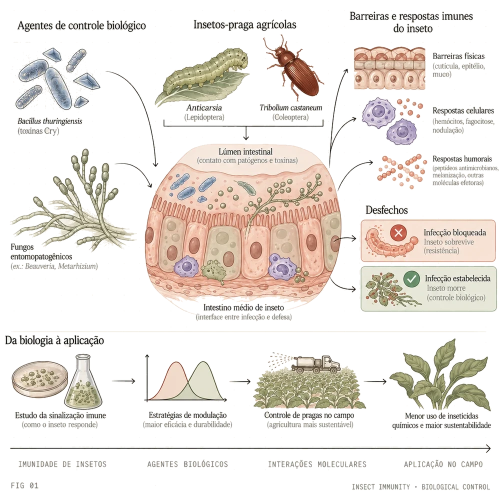

01
Immune memory · epigenetics
Does an insect remember an infection?
Insects have no antibodies and no adaptive immune system, yet a mosquito that survives one infection can meet the next differently. We described a mechanism for that memory in primed mosquitoes, in which a double peroxidase and the histone acetyltransferase AgTip60 sustain the primed state — placing epigenetic regulation at the centre of how a vector's immune response is set.
From the group
- Gomes FM, Tyner MDW, Barletta ABF, et al. Double peroxidase and histone acetyltransferase AgTip60 maintain innate immune memory in primed mosquitoes. PNAS, 2021.
- Gomes FM, Silva M, Molina-Cruz A, Barillas-Mury C. Molecular mechanisms of insect immune memory and pathogen transmission. PLoS Pathogens, 2022.

FIG 01IMMUNE MEMORY